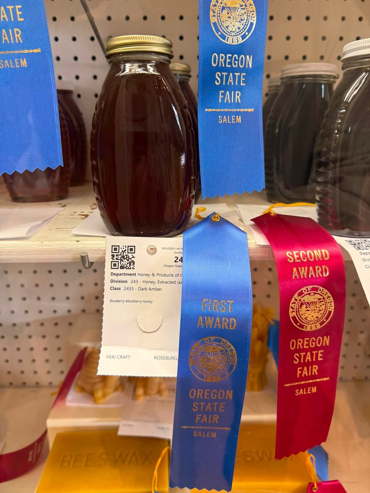
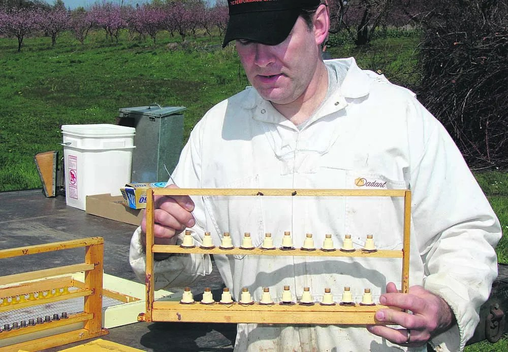
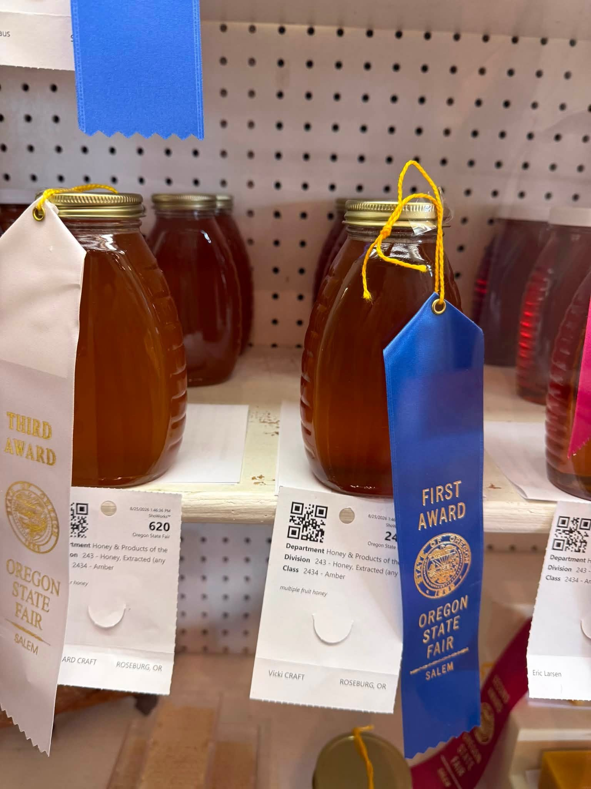

Beekeeping Basics
Get to know the hive, essential equipment, the seasons and what it takes to care for a colony.
INTRODUCTORY CLASS · PROPOSEDJEFFERSON, OREGON · EST. IN THE WILLAMETTE VALLEY
Rooted in the land and guided by the bees themselves. Discover local honey and a beekeeping approach built around resilience, careful observation and respect for nature.
At Farrier Farms, beekeeping is more than producing honey. It is a long-term relationship with the land, the seasons and the remarkable creatures at the heart of our food system.
Richard Farrier has spent years observing his colonies, keeping records and selecting for bees that can thrive in local conditions. The result is a thoughtful, hands-on approach shaped by patience, experience and the lessons each season brings.
Get to know our approach →From rich, dark varietals to delicate seasonal flavors, every harvest tells a story about the flowers and fields our bees visit.

Our honey has earned recognition at the Oregon State Fair, including first-place awards. We’re proud to share the flavors of our region and the work behind every harvest.

Richard’s beekeeping journey has included a focus on natural selection and careful colony observation. By tracking how colonies perform through local seasons, he works to identify and propagate traits that help bees withstand the pressures they face.
“The strongest colonies teach us something. The work is learning to pay attention.”
Ask Richard about his approach ↗Beekeeping is best learned through observation, good questions and time spent around healthy colonies. A future Bee School program could give new and aspiring beekeepers a welcoming place to build practical knowledge.
Ask about learning opportunities →Get to know the hive, essential equipment, the seasons and what it takes to care for a colony.
INTRODUCTORY CLASS · PROPOSEDSee how a hive works, learn what to look for during an inspection and observe bees at work.
HANDS-ON FIELD SESSION · PROPOSEDExplore colony health, seasonal management, natural selection and the value of careful record-keeping.
PRACTICAL WORKSHOP · PROPOSEDInterested in Bee School? Tell us what you'd like to learn and we'll let you know if a class or apiary visit is available.
Register Your Interest →Program ideas shown as a website concept. Dates, availability, fees, class size and safety requirements are to be confirmed by Farrier Farms.
We’re honored that our entries have been recognized by the Oregon State Fair. These ribbons represent the care, craft and countless small decisions behind each harvest.

Reach out to ask about current honey availability, local pollination or the work happening at Farrier Farms.